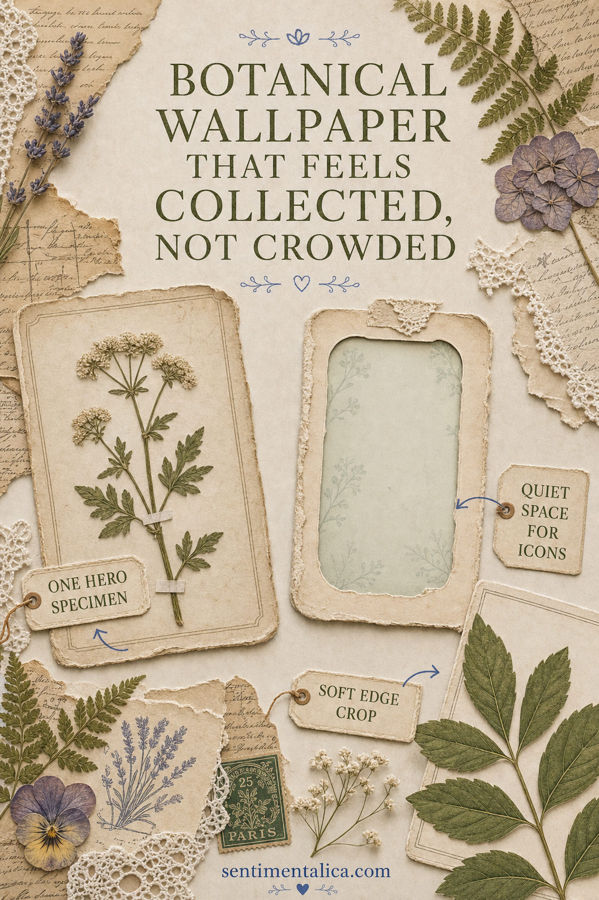
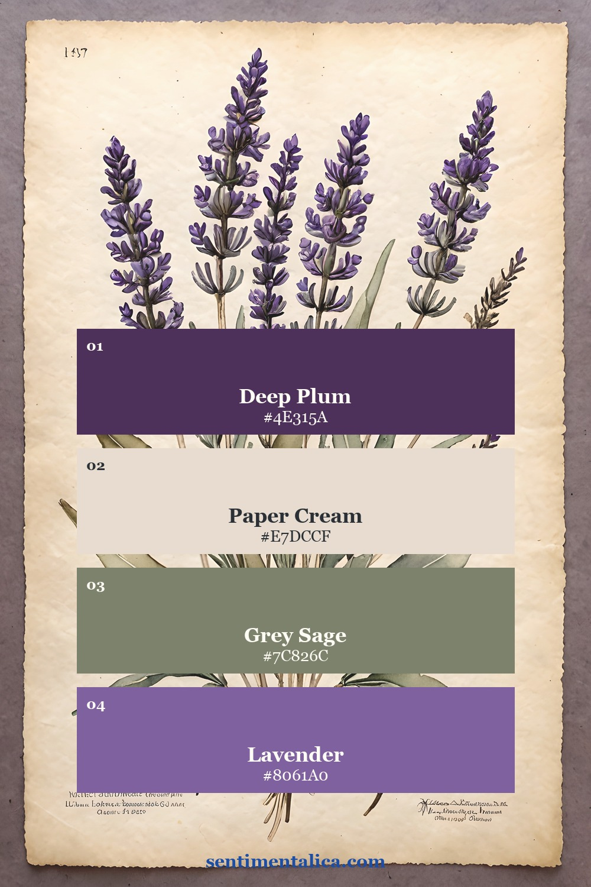
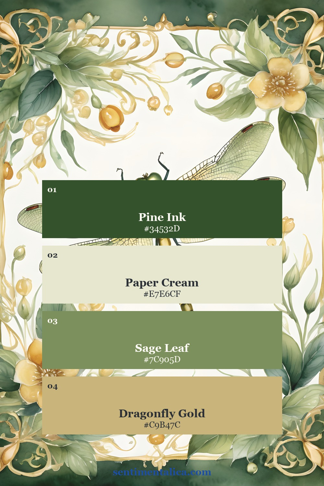
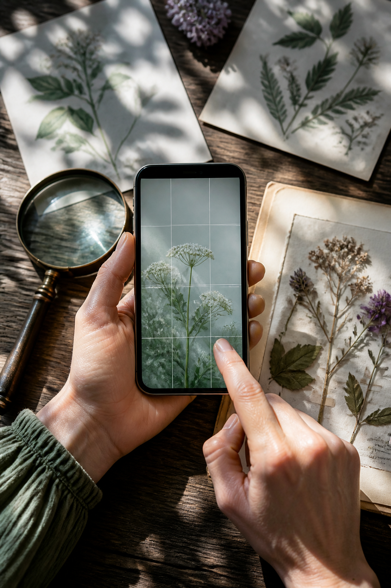
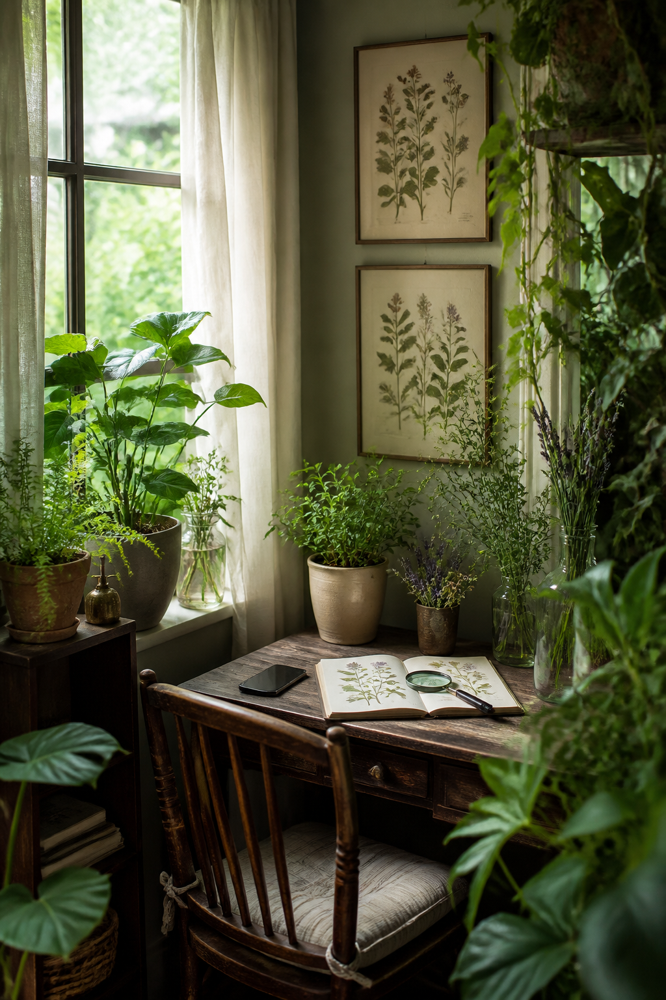
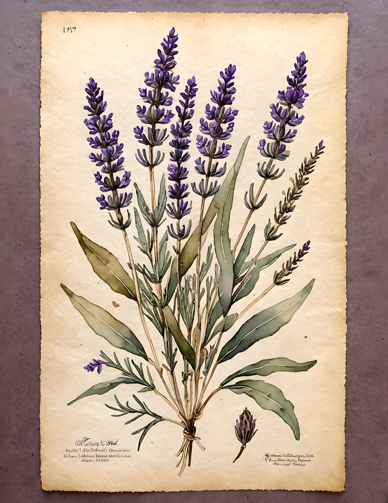
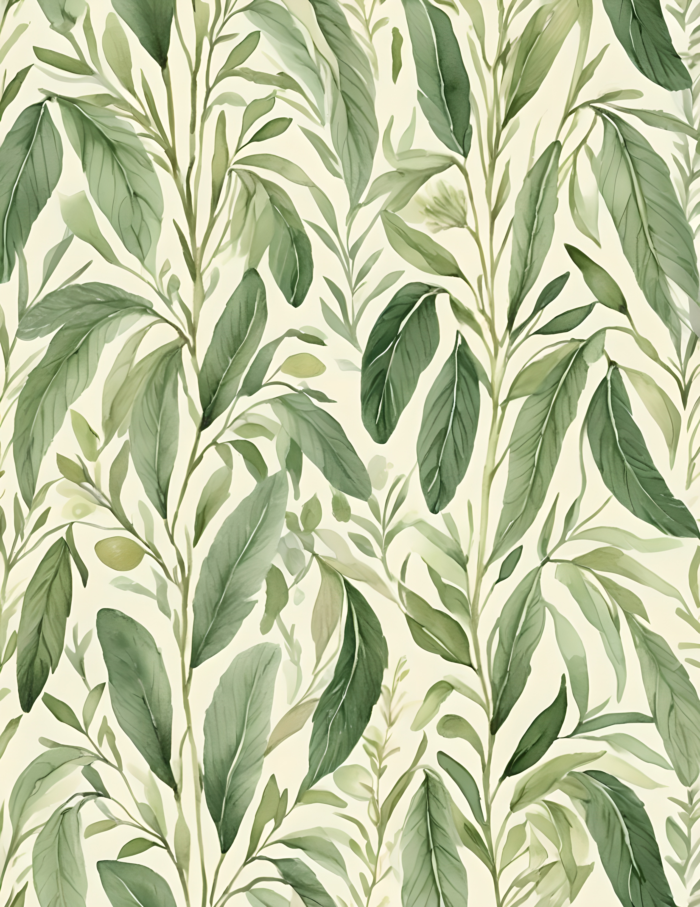
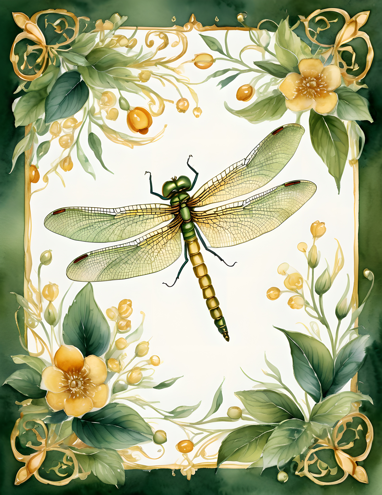

Botanical wallpaper can turn a phone into a tiny field journal, but too many leaves behind a clock and a row of icons quickly become visual noise. The most useful designs feel collected rather than crowded. They usually have one clear specimen, one supporting texture, and a calm area where the screen can still do its job.

Choose one specimen to lead
Start with a single flower, fern, seed head, dragonfly, or branch. It may be large, but it should be easy to name with your eyes. A wallpaper with one confident subject feels more like a naturalist's plate. A field of equally sharp objects feels more like patterned fabric.
Look for a silhouette that remains recognizable when the phone is held at arm's length. Delicate details can still be present inside the subject. They simply should not compete with five other subjects of the same size.
Match the background to your screen habits
If you keep many apps on the home screen, choose parchment, misty gray, deep green, or softly blurred foliage. If your screen is minimal, you can use a more detailed herbarium page. Check the upper area for the clock and the lower corners for shortcuts before deciding on a crop.


Contrast matters more than darkness. Pale numbers can disappear against a white flower, and dark icons can vanish into dense leaves. Test the picture on the actual screen rather than guessing from the image alone.
Crop with a pocket of quiet
Duplicate the image before editing. Move the main specimen slightly left, right, or below center, then preserve a broad patch of background near the clock. Avoid zooming so far that petals or wings touch every edge. A little margin makes the subject feel precious and gives notifications somewhere to land.

Save two crops: one with more negative space and one with more detail. Use each for a full day. The calmer version often becomes the one you keep because it supports the phone instead of asking for attention every time the screen wakes.
Decide whether you want field guide or garden
A field-guide wallpaper isolates the subject, often with a label, frame, or pale paper ground. It feels orderly and contemplative. A garden wallpaper uses leaves, water, insects, and overlapping growth. It feels immersive. Mixing both can work, but one approach should remain dominant.

Violet Haze leans toward the field-guide side through lavender specimens, aged paper, bottles, and botanical studies. Gossamer Wing brings a more enchanted garden mood through dragonflies, lilies, leafy frames, and water. Looking at both can help you decide whether your screen should feel archival or alive.



Make a botanical wallpaper from a free flower
Download the 100 free floral pictures and choose one bloom with a strong outline. Place it over a quiet cream or sage background in your preferred editing app. Keep the top quarter simple, test the clock, and resist adding a second focal flower until you have tried the first version on your phone.
The goal is not to display every botanical detail at once. It is to create one small encounter with nature that remains pleasant after hundreds of glances. Find more practical visual guides in the Sentimentalica journal, or explore the two collections below for more specimen and garden directions.